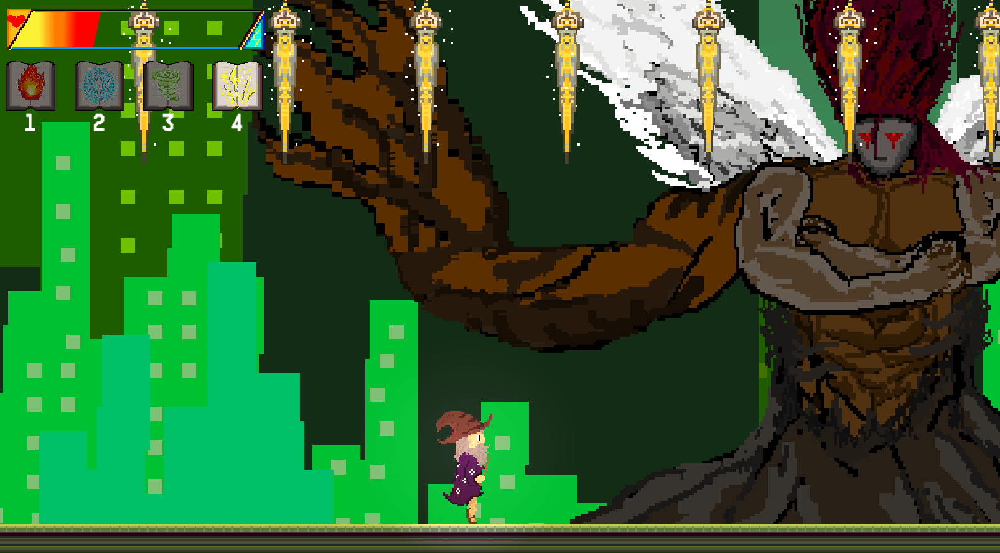

Spellpunk
I served as one of the two programmers on Spellpunk, a game by a group of MSU students known as the Cyber Mages. We were tasked with six weeks to create a game inspired by another work of art: television, film, books, anything. After many ideas, we settled on combining the worlds of Harry Potter and Blade Runner to make something truly special. In this post, read about how I took charge on implementing design-friendly prefabs/scripts, as well as the work it took to get the games central choice working in code. Read ahead!
It begins with a choice...
A wizard, simply working on his spells, becomes trapped in a mysterious storm. It isn't until he falls from a yellow sky that he sees the Cyberpunk future he's been transported into, Dorothy-style. With his adrenaline pumping, he only has time to reach out and grab one of his spells: fire, wind, electricity, or ice. Which one does he grab?
It's this question that drove the games design since the initial pitch. What if, depending on which spell the player initally picks, the game plays out differently? This raised a slew of questions right away. Would this be too much? With only six weeks, we had to scope appropriately and a core mechanic like this seemed like a stretch. Even if it was possible, how would it work? Design-wise, we iterated until we landed on an idea we were happy with. The wizard would initally fall into a large hub that contains paths to every "level" of the game. Every level has a special obstacle before it that can be thwarted by each of the spells. Think of it like each spell being a "key" to unlock one of the levels, and at the end of every level you recieve a new key (spell). Therefore, depending on which spell you choose, the order and natural flow of the game plays out differently for each choice. With that in mind, a new question arose in my head: how was I going to create the systems needed to allow for this level of flexibility?
Spells, Enumerators, and Generators, Oh My!
In the game, the player is able to use spells to attack enemies or get around obstacles using special abilities. For example, I created a player movement script that allows for a double jump when the wind spell is equipped. Due to each spell being tied to unlocking a certain level, this creates a "spell cycle" that drove the design of the game. Fire unlocks ice, ice unlocks wind, and so on. Where the flexibility comes into play is the entry point of this spell cycle. If a player chooses fire as their first spell, then the last level played in the game would be the fire level itself. I had to decide how the scripts would allow for this cycle: players could cycle between spells, but only spells they have unlocked. I also had to keep a personal goal of creating an interface that's easy to use for designers, something I'll touch on further later. The solution? A list, enumerators, and generators.
These generator classes were made to house the code pertaining to each spell so the SpellManager script could remain uncluttered and focused. Every generator was a child of a Projectile parent class, which allowed me to create a list named spellSlots that would serve as the driving factor of the process. If a new spell was learned, it would be added to the list along with it's generator. This allows the cycle of switching spells to merely be a matter of indexing through a list.
The above functions make full use of the index of this spellSlots list, as well as an enumerator named Spells. This enum allowed me to easily pinpoint which spell was being handled in a programmer and design friendly way. Every enum is connected to it's generator by the GetGenerator function. Since the switching of spells is handled by using the index of a list, the SetSpell function could've simply added to the current index and grabbed it's selection from the list. However, to make SetSpell more of a general, useable function, I have helper functions that adjust the current index and let SetSpell take in this new index as a parameter instead. The functions also make use of an object called slots, which is a reference from the UIManager to the spells UI icons. When learning a new spell, it's accompanying icon is placed in the order of which it was learned, making the whole process fully fluid and easy to follow for the player.
Keep Programmers Close, Designers Closer
As mentioned above, a major goal of mine in every project is to create easy to work with scripts that designers can easily interact with. Not only does this keep designers happy, but it saves time and work that would've been spent trying to learn half-explained tools otherwise. A few key things are done to achieve this:
- Creating contained prefabs that don't require additional connections on the designer's end.
- Using singletons that help reduce manual references in scripts.
- Making full use of attributes (Header, Tooltips, etc.) that make for clean scripts in the inspector.
These efforts helped make level design a quick and smooth process. When problems did arise, I made sure to always be available to answer questions or help in any way. It's key to keep communication open between the team across all disciplines.
What I Learned
Overall, the project was an amazing experience that allowed me to dig into programming practices and techniques. A stronger focus on inheritance led to tight and optimized scripts that reused little code throughout the various systems in place. I also focused much more on using singletons, which not only saved memory due to less references, but made scripts easier to follow in the long run. On the design side, it was also fantastic to work on a game where a choice is woven so directly into it's core that the game feels different with every spell picked.
Along with the programming, I also took lead in setting up the pipeline for importing sprites and the lighting of the game. Using Unity's Universal Render Pipeline, I had access to a strong 2D lighting system that gave greater control of a scene's aesthetics and mood. It was a perfect opportunity to delve into other areas that I have less experience with, and I can't wait to use what I learned here on current and future projects.
Wanna see more?
If you're interested and want to see more, watch our trailer and play the game on our itch.io page here! I would love to get in contact and discuss programming, new opportunities, or games in general using the methods below. Thanks for reading!